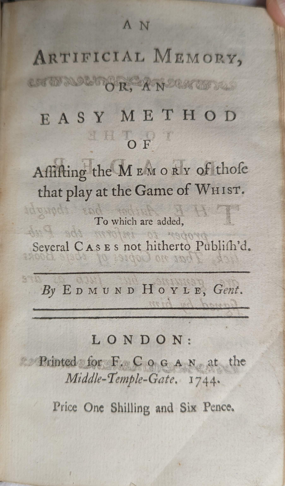

A Descriptive Bibliography of Edmond Hoyle
Copyright © 2014-26 by David Levy
(page updated 2012-01-22)User Guide
Memory.1
An Artificial Memory at the Game of Whist, printed for F. Cogan, first London edition, 1743.
 |
Title: | AN | Artificial Memory, | OR, AN | EASY METHOD | OF | Aſſiſting the Memory of thoſe | that play at the Game of Whist. | To which are added, | Several Cases not hitherto Publiſh'd. | [rule] | By Edmund Hoyle, Gent. | [double rule] | LONDON: | Printed for F. Cogan at the | Middle-Temple-Gate. 1744. | Price One Shilling and Six Pence. |
| Collation: | 12o: A12 B6 [$½ (−A2) signed]; 18 leaves, pp. [1–5] 6–30 [31–36] |
| Contents: | Signature (Page) Reference | Contents | Signature (Page) Reference | Running Titles |
| A1r (1) | blank | |||
| A1v (2) | ‘[headpiece] | TO THE | READER. | T2HE Author has thought | proper to inform the Pub-|lick, That no Copies of theſe Books | are genuine, but ſuch as are | ſigned by him. [autograph of Edmond Hoyle] | [headpiece]’ | |||
| A2r (3) | title | |||
| A2v (4) | blank | |||
| A3r–B3v (5–30) | ‘[headpiece] | AN Artificial Memory, | OR | An Eaſy Method of aſſiſting the | Memory of thoſe that play at | the Game of Whist. | [...]’ | A3v–B3v (6–30) | ‘A Treatiſe on Whist.’ | |
| B4r (31) | ‘[headpiece] | To the Reader. | [...] | [advertisement for Laws.1]’ | |||
| B4v (32) | advertisement for Whist.4 | |||
| B5r (33) | ‘[headpiece] | ☛ Whoever Pirates either of theſe | Works will be ſued. The Proprietor | has already obtained an Injunction | againſt Nine Perſons for pirating or | ſelling pirated Editions of one of | them. | [headpiece]’ | |||
| B5v–B6v (34–36) | blank |
| Publisher: | Francis Cogan |
| Printer: | John Watts (ornaments) |
| Notices: | 1743-11-17 General Evening Post: "This day was published, (price 1s. 6d)..." Advertised with Whist.4, Laws.1, and Backgammon.1. |
| Notices: | 1743-11 The Scots Magazine: (Google) |
| Price: | 1s.6d. (title, advertisement) |
| References: | ESTC N15047, Jessel 784 (Jessel incorrectly gives the date as 1743, but corrects it in two of the three copies of his bibliography, Jessel d.136 and d.137.), Rather 14 (Rather, following Jessel, lists a 1743 edition of this work as item 8. It is a ghost.) |
| Copies Seen: | L [1568/6344(2)]; NvLN [GV1243.H7 1744] (lacking the title page A1, and miscatalogued as Memory.D.1) |
| Copies Seen in Collections: | O [12 Theta 1318(2)] (see Cogan.D); O [Jessel f.543(2)] (see Cogan.D); O [Jessel f.586] (ECCO) (see Cogan.D); Levy [1537] (see Cogan.B) |
| Other Copies: | CtY-BR [NLp80 744H]; ICU [GV1277.H89 1743]; NN [KC 1744 82-1245] |
| Other Copies in Collections: | InU-Li [GV1277.H89 1743] (see Cogan.C) |